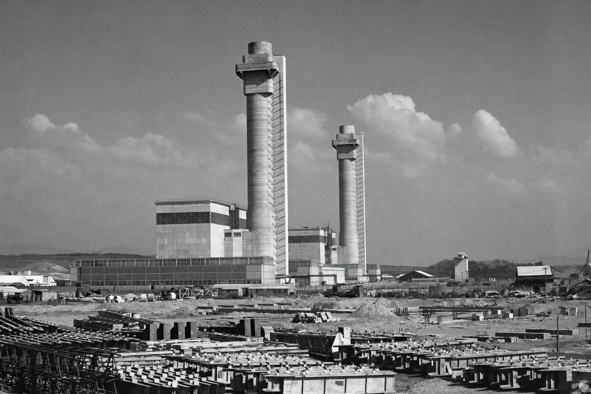

Windscale fire
| Windscale fire | |
|---|---|
 | |
| Date | 10 October 1957 |
| Location | Windscale, Cumberland, England (now Sellafield, Cumbria) |
| Type | Graphite reactor fire |
| INES level | 5 (accident with wider consequences) |
The Windscale fire of 10 October 1957 was the worst nuclear accident in British history and one of the worst in the world at the time. It occurred when the graphite core of Windscale Pile No. 1, an air-cooled reactor at the Windscale site (now Sellafield) in Cumbria, caught fire during a routine release of accumulated Wigner energy, releasing radioactive contamination into the surrounding area. The fire burned for three days and released an estimated 740 terabecquerels of iodine-131, among other radionuclides.
Background
The two Windscale Piles were built in the late 1940s to produce plutonium for the British atomic weapons programme. They were air-cooled, graphite-moderated reactors with no containment buildings. Because neutron bombardment displaces carbon atoms in graphite, energy (Wigner energy) accumulates in the moderator and must periodically be released by controlled heating, or annealing.
The accident
During an annealing operation on 7–8 October 1957, the core of Pile No. 1 overheated — a mishandled second nuclear heat application, together with faulty temperature instrumentation, left part of the core far hotter than intended. Uranium fuel cartridges ignited, and by 10 October it was clear the pile was on fire. Attempts to extinguish it with carbon dioxide failed; water was finally used on 11 October despite fears of a hydrogen explosion, and the fire was brought under control.
The pile's chimney filters — nicknamed "Cockcroft's Folly" after Sir John Cockcroft, who had insisted on them against objections about cost — trapped a significant fraction of the radioactive material that would otherwise have escaped, greatly reducing the release.
Consequences
No one was evacuated, but milk from about 500 square kilometres of nearby farmland was banned for several weeks because of iodine-131 contamination. The official inquiry report by Sir William Penney was initially kept secret, and a censored version was published; the full report was released in 1988. Later epidemiological studies suggested the release may have caused on the order of one to two hundred additional cancer cases over subsequent decades, roughly half of them fatal, though estimates vary.
Pile No. 1 was sealed and remains under decommissioning; Pile No. 2, undamaged but similar in design, was shut down as a precaution. The accident is rated level 5 on the International Nuclear Event Scale.